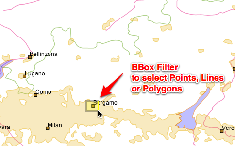
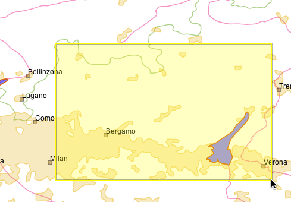
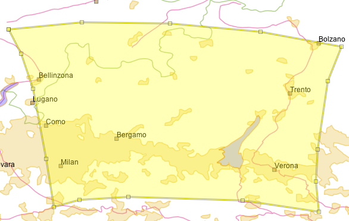
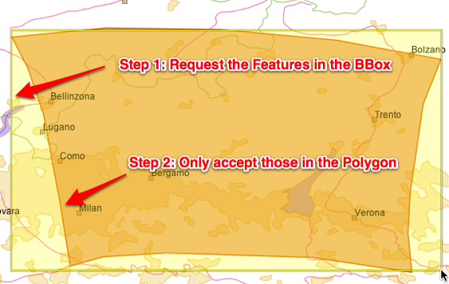
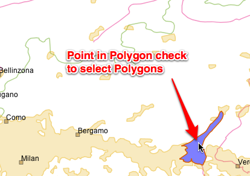
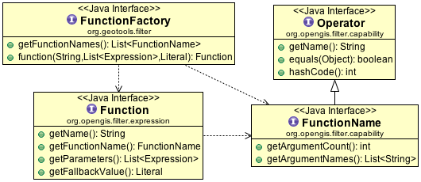

Filter¶
GeoTools makes use of the gt-opengis Filter and Expression interfaces in order to express constraints. This is most often used when making a Query to retrieve specific Features from a DataStore.
Reference:
- gt-opengis data Model for feature, featureType and filter
- gt-opengis Filter model
- gt-cql CQL
- gt-xml XML
- http://docs.geoserver.org/stable/en/user/filter/function_reference.html
You will find the use of Filter in an number of other locations:
- it is used as part of a Style when we need to select what is drawn on the screen
- Part of our FeatureType to express any special constraints on data values (such as the length of a String)
Create Filter¶
Using CQL¶
Most code examples in this wiki will assume you are using the “Common Query Language”, this parser is provided by the gt-cql jar.:
Filter filter = CQL.toFilter("attName >= 5");
Using FilterFactory¶
You have a choice of which filter factory to use:
FilterFactory directly create a filter - according to the limitations of the standard standard.
Use this if you are making a request of an external Web Feature Server and do not want to accidentally step out of bounds.
FilterFactory2 directly create a filter.
Has some additional methods for working with JTS Geometry.
Here is an example:
FilterFactory2 ff = CommonFactoryFinder.getFilterFactory2( GeoTools.getDefaultHints );
Filter filter = ff.contains( ff.property( "THE_GEOM"), ff.literal( geometry ) );
One thing you can do with with a FilterFactory (which you cannot do in CQL) is request features by their FeatureId:
FilterFactory2 ff = CommonFactoryFinder.getFilterFactory2( GeoTools.getDefaultHints );
Set<FeatureId> fids = new HashSet<FeatureId>();
fids.add( ff.featureId("ROAD.1") );
fids.add( ff.featureId("ROAD.2") );
Filter filter = ff.id( fids );
From XML¶
Parsing a Filter 1.0 document:
Parser parser = new Parser( new org.geotools.filter.v1_0.OGCConfiguration() );
Filter filter = (Filter) parser.parse( inputstream );
Using Filter¶
You can use a filter by hand to check an individual Feature:
if( filter.evaulate( feature ) ){
System.out.println( feature.getId() + " was selected" );
}
Java Beans (and plenty of other objects) also work with filter:
if( filter.evaulate( bean ) ){
System.out.println( bean + " was selected" );
}
If you look in the advanced guide you can find out about PropertyAccessors which is how Filter learns how to access new content. You can teach GeoTools how to work with your domain objects by implementing a custom Property Accessor. Using this facility GeoTools users have used filters with Java Beans, Maps and Collections and featureTypes.
Writing XML¶
We have a traditional “Transformer” for quickly writing out an xml fragment for a filter:
FilterTransformer transform = new FilterTransformer();
transform.setIndentation(2);
String xml = transform.transform( filter );
You can also gt-xml and its OGCConfiguration for encoding a filter:
//create the encoder with the filter 1.0 configuration
Configuration = new org.geotools.filter.v1_0.OGCConfiguration();
Encoder encoder = new Encoder( configuration );
//encode
encoder.encode( filter, org.geotools.filter.v1_0.OGC.FILTER, outputStream );
Handling Selection¶
Often an application will want to remember the Feature that a user was working with for later. This section shows a couple of approaches to recording what Features a user has “selected”.
Q: How to find Features using IDs
Each Feature has a FeatureID; you can use these FeatureIDs to request the feature again later.
If you have a Set<String> of feature IDs, which you would like to query from a shapefile:
SimpleFeatureCollection grabSelectedIds(Set<String> selection) throws IOException { FilterFactory2 ff = CommonFactoryFinder.getFilterFactory2(); Set<FeatureId> fids = new HashSet<FeatureId>(); for (String id : selection) { FeatureId fid = ff.featureId(id); fids.add(fid); } Filter filter = ff.id(fids); return featureSource.getFeatures(filter); }
Keeping a Set<String> of feature ids is the best way to handle selection.
Using an Id filter as shown above is often very fast.
- For databases this will result in a query based on the primary key
- For shapefiles it will often be based on the row number
- For a memory datastore the features are stored in a TreeSet sorted by feature id
Q: How to find a Feature by Name
CQL is very good for one off queries like this:
SimpleFeatureCollection grabSelectedName(String name) throws Exception { return featureSource.getFeatures(CQL.toFilter("Name = '" + name + "'")); }To select this feature while ignoring case we are going to have to use the FilterFactory (rather than CQL):
SimpleFeatureCollection grabSelectedNameIgnoreCase(String name) throws Exception { FilterFactory2 ff = CommonFactoryFinder.getFilterFactory2(); Filter filter = ff.equal(ff.property("Name"), ff.literal(name), false); return featureSource.getFeatures(filter); }
Q: How find Features using Names
If you have a Set<String> of “names” which you would like to query from PostGIS. In this case we are doing a check for an attribute called “Name”.
SimpleFeatureCollection grabSelectedNames(Set<String> selectedNames) throws Exception { FilterFactory2 ff = CommonFactoryFinder.getFilterFactory2(); List<Filter> match = new ArrayList<Filter>(); for (String name : selectedNames) { Filter aMatch = ff.equals(ff.property("Name"), ff.literal(name)); match.add(aMatch); } Filter filter = ff.or(match); return featureSource.getFeatures(filter); }
You may want to experiment with the option to ignore case.
Handling Bounding Box¶
Often your users start by selecting on something with a click. Translating that to a BoundingBox, and then into a query is a little involved.
You can make a bounding box query as shown below:
SimpleFeatureCollection grabFeaturesInBoundingBox(double x1, double y1, double x2, double y2)
throws Exception {
FilterFactory2 ff = CommonFactoryFinder.getFilterFactory2();
FeatureType schema = featureSource.getSchema();
// usually "THE_GEOM" for shapefiles
String geometryPropertyName = schema.getGeometryDescriptor().getLocalName();
CoordinateReferenceSystem targetCRS = schema.getGeometryDescriptor()
.getCoordinateReferenceSystem();
ReferencedEnvelope bbox = new ReferencedEnvelope(x1, y1, x2, y2, targetCRS);
Filter filter = ff.bbox(ff.property(geometryPropertyName), bbox);
return featureSource.getFeatures(filter);
}
As you can see we had to sort out what the attribute name of the default geometry was in order to make the correct query.
Q: What features are on the screen?
BBOX
One quick way to handle this is to treat the screen as a BBox and make a request for the contents.

Using a simple bounding box check is fast, but may retrieve more content then you will end up displaying.:
ReferencedEnvelope screen = new ReferencedEnvelope( x1, y1, x2, y2, worldCRS ); // Transform to dataCRS, ignoring difference in datum, 10 samples per edge ReferencedEnvelope world = screen.transform( dataCRS, true, 10 ); FilterFactory2 bounds = CommonFactoryFinder.getFilterFactory2( GeoTools.getDefaultHints ); Filter filter = ff.bbox( ff.property( "THE_GEOM" ), ff.literal( bounds ) );
Intersects
The other way is to constructing a more exact polygon that follows the shape of your screen when transformed into your data’s coordinate reference system.
Using a more exact polygon will result in a slower check, but less features will be retrieved (good for working with a WFS where sending the content is expensive):
SimpleFeatureCollection grabFeaturesInPolygon(double x1, double y1, double x2, double y2) throws Exception { FilterFactory2 ff = CommonFactoryFinder.getFilterFactory2(); FeatureType schema = featureSource.getSchema(); CoordinateReferenceSystem worldCRS = DefaultGeographicCRS.WGS84; // usually "THE_GEOM" for shapefiles String geometryPropertyName = schema.getGeometryDescriptor().getLocalName(); CoordinateReferenceSystem targetCRS = schema.getGeometryDescriptor() .getCoordinateReferenceSystem(); ReferencedEnvelope click = new ReferencedEnvelope(x1, y1, x2, y2, worldCRS); // will result in a slight larger BBOX then the original click ReferencedEnvelope bbox = click.transform(targetCRS, true); // will result in a polygon matching the original click Polygon clickPolygon = JTS.toGeometry(bbox, null, 10); MathTransform transform = CRS.findMathTransform(worldCRS, targetCRS); Polygon polygon = (Polygon) JTS.transform(clickPolygon, transform); Filter filter = ff.intersects(ff.property(geometryPropertyName), ff.literal(polygon)); return featureSource.getFeatures(filter); }
BBox and then Intersects
You can go faster by using both techniques, the bounds check will cut down on most of the features right away; and the more expensive Polygon for the final check.
Advanced data sources like PostGIS perform these kind of checks internally, but you will notice a large difference when working with shape files.:
SimpleFeatureCollection grabFeaturesOnScreen(ReferencedEnvelope screen) throws Exception { FilterFactory2 ff = CommonFactoryFinder.getFilterFactory2(); FeatureType schema = featureSource.getSchema(); // usually "THE_GEOM" for shapefiles String geometryPropertyName = schema.getGeometryDescriptor().getLocalName(); CoordinateReferenceSystem targetCRS = schema.getGeometryDescriptor() .getCoordinateReferenceSystem(); CoordinateReferenceSystem worldCRS = screen.getCoordinateReferenceSystem(); // will result in a slight larger BBOX then the original click ReferencedEnvelope bbox = screen.transform(targetCRS, true); // will result in a polygon matching the original click Polygon clickPolygon = JTS.toGeometry(bbox, null, 10); MathTransform transform = CRS.findMathTransform(worldCRS, targetCRS); Polygon polygon = (Polygon) JTS.transform(clickPolygon, transform); Filter filter1 = ff.bbox(ff.property(geometryPropertyName), bbox); Filter filter2 = ff.intersects(ff.property(geometryPropertyName), ff.literal(polygon)); Filter filter = ff.and(filter1, filter2); return featureSource.getFeatures(filter); }
Q: What did I click on?
Construct a bounding box for the pixel, and “back project” it into your data’s coordinate reference system. In the following example we have expanded our bounding box to be 3x3 pixels in order to make it easier to click on points and lines:
In this example we have transformed our selection using 10 points for each edge of the rectangle:
SimpleFeatureCollection click1(MapMouseEvent ev) throws Exception { // Construct a 3x3 pixel rectangle centred on the mouse click position java.awt.Point screenPos = ev.getPoint(); Rectangle screenRect = new Rectangle(screenPos.x - 1, screenPos.y - 1, 3, 3); CoordinateReferenceSystem worldCRS = mapFrame.getMapContent().getCoordinateReferenceSystem(); // Transform the screen rectangle into a bounding box in the // coordinate reference system of our map content. AffineTransform screenToWorld = mapFrame.getMapPane().getScreenToWorldTransform(); Rectangle2D worldRect = screenToWorld.createTransformedShape(screenRect).getBounds2D(); ReferencedEnvelope worldBBox = new ReferencedEnvelope(worldRect, worldCRS); // transform from world to target CRS SimpleFeatureType schema = featureSource.getSchema(); CoordinateReferenceSystem targetCRS = schema.getCoordinateReferenceSystem(); String geometryAttributeName = schema.getGeometryDescriptor().getLocalName(); ReferencedEnvelope bbox = worldBBox.transform(targetCRS, true, 10); FilterFactory2 ff = CommonFactoryFinder.getFilterFactory2(); // Option 1 BBOX Filter filter = ff.bbox(ff.property(geometryAttributeName), bbox); // Option 2 Intersects // Filter filter = ff.intersects(ff.property(geometryAttributeName), ff.literal(bbox)); return featureSource.getFeatures(filter); }
Use a point for to Check Polygon Layers
You can turn the tables around when selecting polygons, and issue your query using a single point - and check what polygon(s) contain the point.
Please note this is only suitable for working with Polygons as selecting a line using a single point is next to impossible.:
FilterFactory2 ff = CommonFactoryFinder.getFilterFactory2( null ); Filter filter = ff.contains( ff.property( geometryAttributeName ), ff.literal( point ) );Use a distance Check
Another common approach is to call geometry.buffer( distance ) and then select with the resulting polygon.
Please consider making your request with a distance check instead.
The “units” for the distance are the same as for your data; so if you are using “EPSG:3005” they will be in meters; if you are using “EPSG:4326” they will be in angular degrees.:
SimpleFeatureCollection distance(MapMouseEvent ev) throws Exception { DirectPosition2D worldPosition = ev.getMapPosition(); // get the unit of measurement SimpleFeatureType schema = featureSource.getSchema(); CoordinateReferenceSystem crs = schema.getGeometryDescriptor().getCoordinateReferenceSystem(); Unit<?> uom = crs.getCoordinateSystem().getAxis(0).getUnit(); MathTransform transform = CRS.findMathTransform(worldPosition.getCoordinateReferenceSystem(), crs, true); DirectPosition dataPosition = transform.transform(worldPosition, null); Point point = JTS.toGeometry(dataPosition); // threshold distance double distance = 10.0d; FilterFactory2 ff = CommonFactoryFinder.getFilterFactory2(); Filter filter = ff.dwithin(ff.property("POLYGON"), ff.literal(point), distance, uom.toString()); return featureSource.getFeatures(filter); }This technique also benefits from adding a BBox check in front.
Expression¶
We can go through the same steps to create an expression.
CQL
Used for human readable code examples, “Common Query Language” parser is provided by gt-cql jar.:
Expression filter = CQL.toExpression("attName");FilterFactory
You have a choice of which filter factory to use:
- FilterFactory directly create a filter - according to the
limitations of the standard standard.
Use this if you are making a request of an external Web Feature Server and do not want to accidentally step out of bounds.
FilterFactory2 directly create a filter.
Has some additional methods for working with JTS Geometry.
Here is an example:
FilterFactory2 ff = CommonFactoryFinder.getFilterFactory2( GeoTools.getDefaultHints ); Expression propertyAccess = ff.property( "THE_GEOM"); Expression literal = ff.literal( geometry ); Expression math = ff.add( ff.literal(1), ff.literal(2) ); Expression math = ff.add( ff.literal(1), ff.literal(2) ); Expression function = function( "length', ff.property("CITY_NAME") );
Function¶
Function is a little special as it is your chance to add new functions to the system.
You accomplish this by providing three peices of information:
- Function - implementation of Function
- FunctionName - description of Function including name and argument names advertising that a Function is available
- FunctionFactory - used to construct a Function on request by FilterFactory.function( name, expression ... )
If you are interested in implementing a function and registering it with GeoTools is the example used to explain the GeoTools plugin system.
FunctionFinder¶
You can directly create a Function with a FunctionFinder; this gives you access to the actual implementing class; which occasionally offer more options that are accessible through filter factory.
- getAllFunctionDescriptions()
- findFunctionDescription(String)
- FunctionFinder.findFunction(String)
- FunctionFinder.findFunction(String, List<Expression> )
- FunctionFinder.findFunction(String, List<Expression, Literal)
As an example FunctionFinder gives you a way to lookup a Function, with a “safe” fallback value provided by a Literal in the event the function could not be found.:
FunctionFinder finder = new FunctionFinder( null );
// default answer() of 42
Function function = finder.findFunction( "answer", Collections.EMPTY_LIST, ff.literal( 42 ) );
FunctionFactory¶
Internally FunctionFinder uses CommonFactoryFinder to retrieve a list of FunctionFactory instances that are available on the CLASSPATH.
Here an example listing all the functions (where each function is described by a FunctionName): FunctionDescription is provided by the FunctionName):
Set<FunctionFactory> functionFactories = CommonFactoryFinder.getFunctionFactories(null);
for (FunctionFactory factory : functionFactories) {
System.out.println( factory.getClass().getName() );
List<FunctionName> functionNames = factory.getFunctionNames();
ArrayList<FunctionName> sorted = new ArrayList<FunctionName> ( functionNames );
Collections.sort( sorted, new Comparator<FunctionName>() {
public int compare(FunctionName o1, FunctionName o2) {
if( o1 == null && o2 == null ) return 0;
if( o1 == null && o2 != null ) return 1;
if( o1 != null && o2 == null ) return -1;
return o1.getName().compareTo( o2.getName() );
}
} );
for (FunctionName functionName : sorted ) {
System.out.print(" ");
System.out.print(functionName.getName());
System.out.print("(");
int i = 0;
for (Parameter<?> argument : functionName.getArguments()) {
if (i++ > 0) {
System.out.print(", ");
}
System.out.print(argument.getName());
if( argument.getType() == Object.class && argument.isRequired() ){
// no interesting description
}
else {
System.out.print("{");
System.out.print( argument.getType().getSimpleName() );
if( argument.isRequired()){
System.out.print(",required");
}
else if( argument.getMinOccurs() == 0 && argument.getMaxOccurs() == 1 ) {
System.out.print(",optional");
}
else {
int min = argument.getMinOccurs();
int max = argument.getMaxOccurs();
System.out.print(",");
System.out.print(min);
System.out.print(":");
System.out.print(max==Integer.MAX_VALUE?"unbounded":max);
}
System.out.print("}");
}
}
Parameter<?> result = functionName.getReturn();
System.out.print(")");
System.out.print(":"+result.getName());
if( result.getType() != Object.class ){
System.out.print("{");
Class<?> type = result.getType();
if( type != null ){
System.out.print( type.getSimpleName() );
}
else {
System.out.print( "null" );
}
System.out.print("}");
}
System.out.println();
}
}
Variable Arguments¶
Here are some examples that allow for a variable number of arguments:
Definition of stroke-width based on attribute:
categorize( attribute, 1, 5000, 2, 15000, 3, 40000, 4,750000, 5 );
fill-color smoothly interpolated based on attribute:
interpolation( attribute, 0.0, '#005500', 3300.0, 'AA1100', 5000.0, #FFFFFF, "linear", "color", )
FilterVisitor¶
The FilterVisitor interface allows you to smoothly interact and ask questions about a filter or create a slightly modified copy.
You will find many of these examples also implement ExpressionVisitor in order to visit the Expressions making up the Filter. The practice of using a visitor to ask questions about; or return a modified copy of an immutable data structure is common; you will see this practice repeated when working with StyleVisitors (Style objects contain both Filters and Expressions).
The GeoTools library includes a number of ready to use FilterVisitors.
| Class | FilterVisitor | ExpressionVisitor | Notes |
|---|---|---|---|
| DefaultFilterVisitor | yes | yes | Visits everything, does nothing |
| DuplicatingFilterVisitor | yes | yes | Copies the provided filter |
| FilterAttributeExtractor | yes | yes | Set of propertyNames |
DefaultFilterVisitor¶
DefaultFilterVisitor does absolutely nothing; and is thus a great place to start from when making your own visitor.
Q: What is the set of FeatureIDs being used?
Here is an example of visiting a specific Filter (the “Id” filter):
FilterVisitor allFids = new DefaultFilterVisitor(){ public Object visit( Id filter, Object data ) { Set set = (Set) data; set.addAll(filter.getIDs()); return set; } }; Set set = (Set) myFilter.accept(allFids, new HashSet());For each Id filter we are recording some information, the result of which is returned.
We have packaged up this implementation for you already:
Set set = (Set) myFilter.accept( IdCollectorFilterVisitor.ID_COLLECTOR, new HashSet() );
Q: What are all the PropertyNames used?
This time we will need to visit a Expression (the “PropertyName” expression):
class FindNames extends DefaultFilterVisitor { public Object visit( PropertyName expression, Object data ) { Set set = (Set) data; set.add( expression.getPropertyName() ); return set; } } Set set = (Set) myFilter.accept( new FindNames(), new HashSet() );While this example looks simple it is often used to check a Filter (to check for XPath expressions) before turning a Filter into SQL.
This use is so common we have one ready to use for you:
Set set = (Set) myFilter.accept( new FilterAttributeExtractor(), null );
Q: Is this filter supported
A FilterCapabilities data structure contains the list of supported functions and for a Web Feature Server (and eventually for other DataStores). You can use the following code example example to check if a filter is supported.
To quickly check if a specific filter is supported:
boolean yes = filter.accepts( IsSupportedFilterVisitor( capabilities ), null );
To do a complete check of a filter and all its children:
boolean yes = filter.accepts( IsFullySupportedFilterVisitor( capabilities ), null );
The isFullySupportedFilterVisitor is very complete:
- ensure that your Id filters make sense (ie if you are using FeatureIds for Features; or ObjectId is for objects)
- For a logical filter (like NOT, AND and OR) it will check each child filter
- For a function it will that the function is defined, and that all the arguments are supported
DuplicatingFilterVisitor¶
Out of the box the DuplicatingFilterVisitor will create a copy of the provided Filter (or Expression).:
Filter newFilter = (Filter) filter.accept( new DuplicatingFilterVisitor(), null );
You can provide your own FilterFactory if you want:
Filter newFilter = (Filter) filter.accept( new DuplicatingFilterVisitor(), filterFactory );
If you every want to “edit” or modify an existing filter this is the place to start.:
* Optimizing a Filter
Here is an example optimization:
class Optimization extends DuplicatingFilterVisitor { public Object visit( Add expression, Object extraData ) { Expression expr1 = expression.getExpression1(); Expression expr2 = expression.getExpression2(); if( expr1 instanceof Literal && expr2 instanceof Literal){ Double number1 = (Double) expr1.evaluate(null,Double.class); Double number2 = (Double) expr2.evaluate(null,Double.class); return factory.literal( number1.doubleValue() + number2.doubleValue() ); } return super.visit(expression, extraData); } }; Expression modified = (Expression) add.accept( new Optimization(), null );You can use optimisations like this to evaluate as much as a statement as possible before turning it into SQL.
Using ExpressionVisitor to ask Questions
IsStaticExpressionVisitor.VISITOR¶
As static filter contains no “propertyName” elements; and will evaluate to the same answer regardless of the feature, java bean or metadata entry it is being used on.
Q: Is this filter static:
if( filter.accepts( IsStaticExpressionVisitor.VISITOR, null ) ){ Color color = expression.evaulate( null, Color.class ); ... }
Filters¶
There is a small utility class Filters that packages up some common Filter operations.
Filters.accept(Filter, FilterVisitor)
Used to adapt a GeoTools 2.2 FilterVisitor to what we use today. The major additions are allowing for Filter.INCLUDES and Filter.EXCLUDES as “visitable” targets.
asDouble(Expression)
asInt(Expression)
asString(Expression)
asType(Expression, Class<T>)
gets(String, Class)
number(Object)
puts(Color)
puts(double)
puts(Object)
Helper methods for those implementing Filter, these have been replaced with the much more powerful Converters class.:
// before text = Filters.puts( Color.BLACK ); // after text = Converters.convert( Color.BLACK, String.class );
Filters.getFilterType(Filter)
Assist GeoTools 2.2 code where FeatureType constants were used rather than instanceof checks.:
// before switch( Filters.getFilterType( filter ) ){ FilterType.GEOMETRY_BBOX: ... } // after if( filter instanceof BBOX ){ .. }Filters.duplicate( filter )
Can be used to perform a deep copy of a Filter:
Filters utility = Filters(); Filter copy = filters.duplicate( filter );
Internally this method uses DuplicatingFilterVisitor:
DuplicatingFilterVisitor duplicate = new DuplicatingFilterVisitor(); Filter copy = (Filter) filter.accept( duplicate, null );
Filters.attributeNames(filter, SimpleFeatureType)
Filters.propertyNames(expression)
Filters.propertyNames(expression, SimpleFeatureType)
Filters.propertyNames(filter)
Filters.propertyNames(filter, SimpleFeatureType)
Filters.findPropertyName( filter );
Methods use to query the structure of the provided Filter. Internally these usually use a FilterVisitor to transerse the provided Filter to determine the answer.
Here is a quick example using findPropertyName( filter ):
String xpath = Filters.findPropertyName(b); if( xpath != null ){ // proeprty name found with indicated xpath expression } else { // filter does not contain any references to PropertyName }Filters.hasChildren(Filter)
Filters.children(Filter)
Filters.children(Filter, boolean)
Query methods regard “children” only apply to filters and, or and not which are used to combine the results of several filters.
Filters.and(FilterFactory, Filter, Filter)
Filters.or(FilterFactory, Filter, Filter)
Used to combine two filters; will sensibly “append” filters onto an existing and or or filter.
The result is a new filter combining the two filters as requested.
Tip: Used to update GeoTools 2.2 code where Filter was mutable.
Filters.removeFilter(Filter, Filter)
Filters.removeFilter(Filter, Filter, boolean)
Used to seperate out a child from the provided filter.
Much like and and or above these methods return a modified filter.
Capabilities¶
You can also use the FilterFactory to fill in a filter capabiliies data structure describing the abilities of a web or database service.
However we also have a Capabilities user class which is helpful both in acting as a “builder” when creating a FilterCapabilities data structure; and also in making use of the result.
Capabilities as a builder:
Capabilities capabilities = new Capabilities(); capabilities.addType( Beyond.class ); // add to SpatialCapabilities capabilities.addType( PropertyIsEqualTo.class ); // add to ScalarCapabilities capabilities.addName( "NullCheck" ); // will enable PropertyIsNull use capabilities.addName( "Mul" ); // will enable hasSimpleArithmatic capabilities.addName( "random" ); // a function returning a random number capabilities.addName( "Length", 1 ); // single argument function capabilities.addName( "toDegrees", "radians" ); // single argument function capabilities.addName( "length", "expression" );
Using Capabilities:
Capabilities capabilities = new Capabilities( filterCapabilities ); FilterFactory2 ff = CommonFactoryFinder.getFilterFactory2(null); Filter filter = ff.between( ff.literal(0), ff.property("x"), ff.literal( 2 ) ); if( capabilities.supports( filter ) ){ // native support for "between" available }